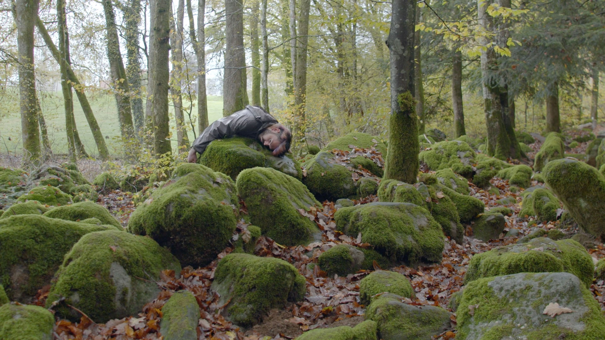
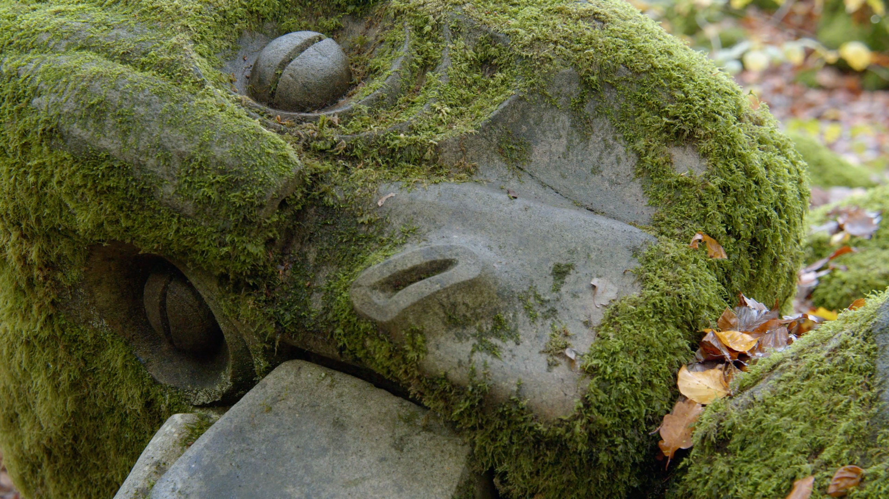
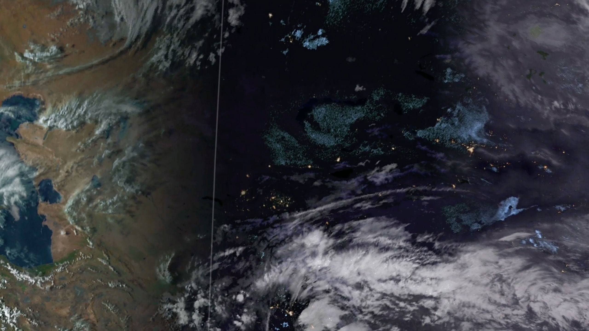
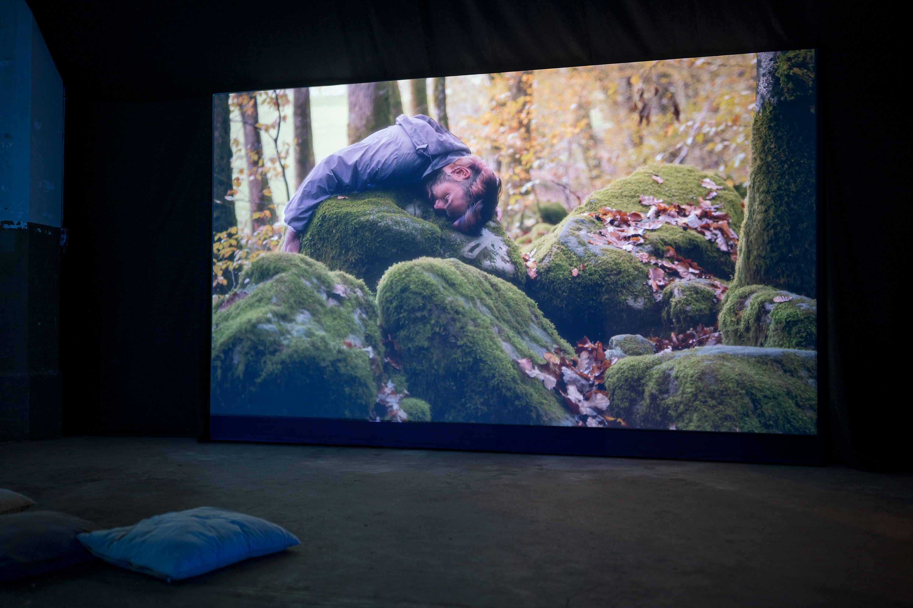
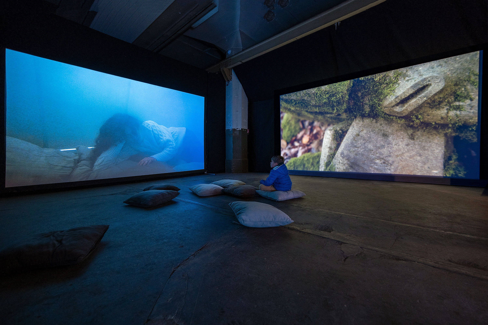

Jessica Arseneau



Images fixes tirées de la vidéo


Vues d'installation, Ligne du terminateur (droit) et Solaire (gauche), Motoco, Mulhouse
Ligne du terminateur, 2023
Vidéo HD, son stéreo
7:45 min.
Performeur : Aurélien Finance
Sculpteur : Philippe Leonard
Assistante de projet : Laura Haby
Caméra : Jessica Arseneau, Laura Haby
Montage visuel/sonore/étalonage : Jessica Arseneau
Une pierre sculptée en forme de visage humain qui semble endormie est allongée dans une forêt. La formation d'une roche datant d'ères géologiques lointaines, cette pierre pourrait être endormie depuis plusieurs milliers d'années ou être prise d'une fatigue permanente, la mousse poussant dans le creux des cernes sous ses yeux. Des images satellites de la terre défilent sur l'écran le long de la zone crépusculaire, montrant à la fois la nuit et le jour, l'aube et le crépuscule. Ces images capturent les villes illuminées en permanence, montrant la Terre comme un site presque toujours éclairé qui nous permet de continuer sans pause. Cependant, certaines locations ne sont pas éclairés la nuit, comme des lieux en situation de crise et des zones qui semblent intactes.
Si la fatigue qui se dégage de la vidéo peut être liée à l'activité constante des sociétés occidentales, elle reflète également un sentiment plus large de solitude et de nostalgie, à la fois à un niveau micro et macro.
Remerciements : Marie Paule Bilger, Jean-Jacques Delattre, Emmanuel Henninger, Jeremy Ledda, Florent Rusch, KM0, La Ferme Aventure, Motoco, Kunsthalle Mulhouse, Goethe-Institut Strasbourg
Ce projet a été créé durant la résidence de création ALLEZ & ZURÜCK du Goethe-Institute Strasbourg, en collaboration avec la Kunsthalle Mulhouse, Motoco, Goethe-Institut Nancy, le Bureau des arts plastiques et supporté par OFAJ DFJW, DRAC Grand Est et Centre Français de Berlin. Ce projet bénificie du support de ArtsNB.